Da Califórnia
Veio dos Estados Unidos sem nenhuma tatuagem e começou logo por esta peça.
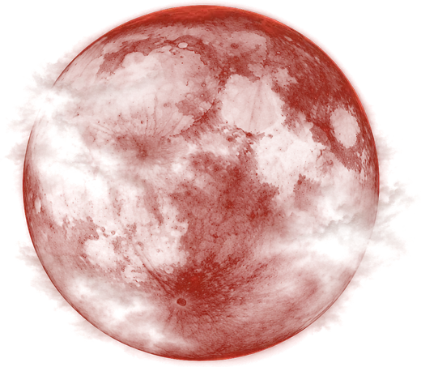
A origem
“Antes de existir um tatuador, existia uma criança que enxergava beleza onde os outros viam estranheza.”
Desde pequeno, minha relação com a arte fugia do convencional. Enquanto outras crianças desenhavam casas e paisagens, eu desenhava cemitérios, lápides e corvos: um universo obscuro que, por muito tempo, aprendi a esconder.
Mas a arte nunca deixou de fazer parte de mim.
Enquanto trabalhava como estoquista em uma loja de autopeças, meu supervisor descobriu meus desenhos e me incentivou a seguir o caminho da tatuagem.
Comecei do zero, com poucos recursos e muita determinação. Explorei diferentes estilos e técnicas até reencontrar minha verdadeira identidade artística no Dark Art e no realismo preto e cinza.
Hoje, com 12 anos de trajetória, transformo o grotesco e o sombrio em arte, buscando revelar beleza onde muitos não conseguem enxergá-la.
Porque, no fim, não precisei me tornar alguém diferente. Apenas tive coragem de ser quem sempre fui.
Thiago Zaparolli
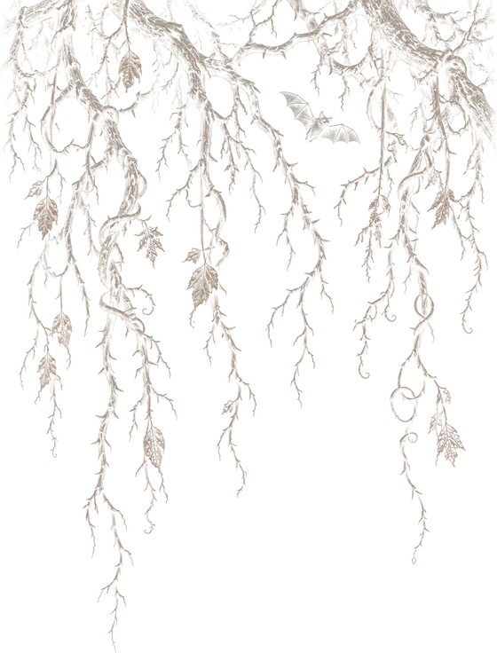
Processo criativo
“Cada composição é resultado de técnica, criatividade e atenção aos detalhes.”
 Perspectiva
Perspectiva Profundidade
Profundidade Contraste
Contraste Encaixe anatômico
Encaixe anatômicoAcredito que uma tatuagem deve ir além de uma imagem. Ela precisa respeitar a anatomia, valorizar as características individuais e, principalmente, representar a identidade de quem a carrega.
Por isso, cada projeto começa com uma conversa. Busco compreender suas ideias, referências e expectativas, analisando também a região do corpo e as particularidades da sua pele.
Filmes, símbolos, músicas e outras expressões artísticas podem servir de inspiração. Tudo é cuidadosamente interpretado para desenvolver uma composição autoral, pensada exclusivamente para você.
Cada detalhe importa: perspectiva, profundidade, contraste e encaixe anatômico são fundamentais para que a arte tenha impacto visual, equilíbrio e longevidade.
Mais do que reproduzir uma referência, meu objetivo é transformar sua ideia em algo único.
Thiago Zaparolli
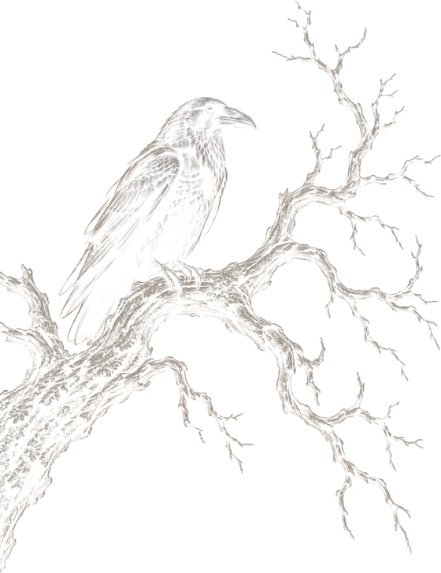
Na pele
Uma seleção de trabalhos que traduzem minha identidade artística. Cada projeto carrega uma história, uma essência e uma execução única.
Agenda
Sua ideia, desenhada para o seu corpo
Mande a referência, a foto do local e o tamanho. O orçamento é feito pelo WhatsApp.
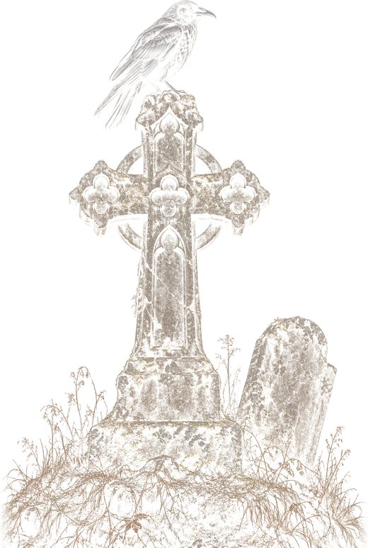
A arte de transformar
“Meu objetivo não é apenas cobrir o que ficou para trás, mas criar algo que você tenha orgulho de carregar daqui para frente.”
Uma cobertura vai muito além de esconder uma tatuagem antiga. É um processo de transformação que exige experiência, planejamento e conhecimento técnico.
Cada projeto é avaliado individualmente, considerando a pigmentação existente, as características da pele e as possibilidades reais de cobertura.
Através de técnicas de contraste, profundidade e composição, busco transformar o antigo em uma nova arte, com harmonia, identidade e durabilidade.
Mandar foto da tattoo antiga


Feedback
Nas palavras de quem tatuou com o Zapa, e de quem cruzou cidades, estados e até países para isso.
Lucas
As costas inteiras em dark art, da primeira sessão à recuperação.
Carlos
Um dragão colorido que já não agradava virou o espartano com corvo.
Outros relatos
Da Califórnia
Veio dos Estados Unidos sem nenhuma tatuagem e começou logo por esta peça.

De Brusque
A Nicole encarou quatro dias seguidos de sessão: 30 horas até a fera ficar pronta.

Dez anos de espera
O Natan passou uma década procurando alguém que transformasse o sonho dele em algo vivo.

Tattoo Week 2025
Em novembro de 2025, o Zapa foi convidado para ser jurado na Tattoo Week, em São Paulo, a maior convenção de tatuagem do mundo.
“Subir naquele palco, segurar aquele troféu e olhar para tudo o que construí… é difícil explicar. Me senti vivendo exatamente aquilo que a versão mais jovem de mim dizia que era impossível.”Thiago ZaparolliVer os trabalhos
Orçamentos
Orçamentos e agendamentos são feitos só pelo WhatsApp. Com estas informações o projeto já começa a ser planejado.
Alguém da equipe cuida do atendimento, explica como o Zapa trabalha e tira as suas dúvidas.
Uma foto, um símbolo, um verso. Mande imagens de referência para entender o estilo e o tema.
Fotografe onde quer tatuar, demarque a área na foto e diga o tamanho aproximado em centímetros.
A arte é criada sob medida para o encaixe no seu corpo, e a sessão acontece no estúdio privado.
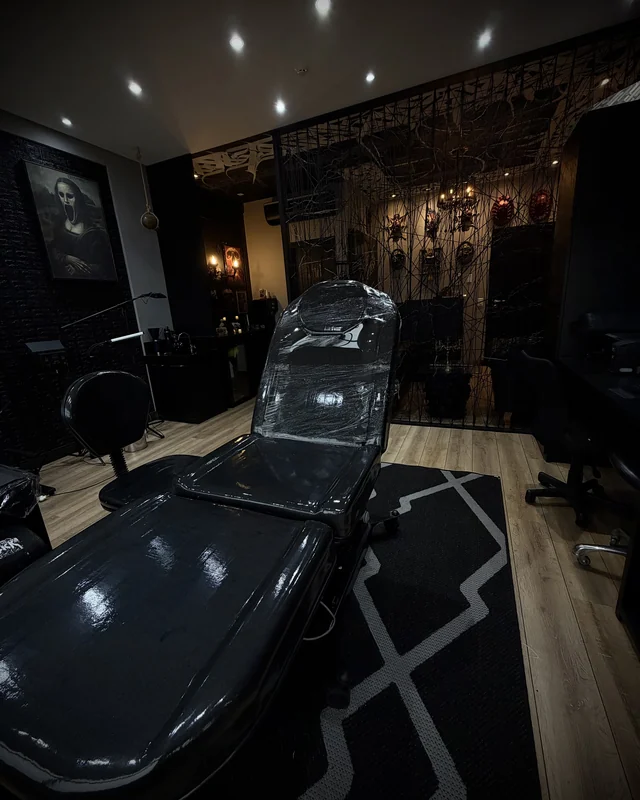
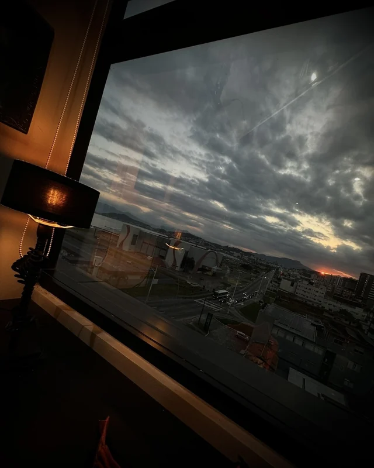
Estúdio
“Um trabalho que você levará para sempre merece mais do que algumas horas de atenção. Merece dedicação absoluta.”
Por isso, priorizo atender apenas um cliente por dia. Sem pressa, sem interrupções e com toda a atenção necessária para alcançar o melhor resultado.
Meu estúdio é um espaço privado, confortável e com vista para o mar. Um ambiente que carrega minha identidade artística, pensado para oferecer privacidade, tranquilidade e uma experiência que vai além da tatuagem.
Durante a sessão, bebidas e coffee break são oferecidos como cortesia, proporcionando ainda mais conforto ao longo do dia.
Da preparação à cicatrização, cada etapa é conduzida com responsabilidade, biossegurança e atenção aos detalhes.
“Mais do que criar uma tatuagem, meu compromisso é com a experiência e com a arte que fará parte de você para sempre.”
Thiago Zaparolli
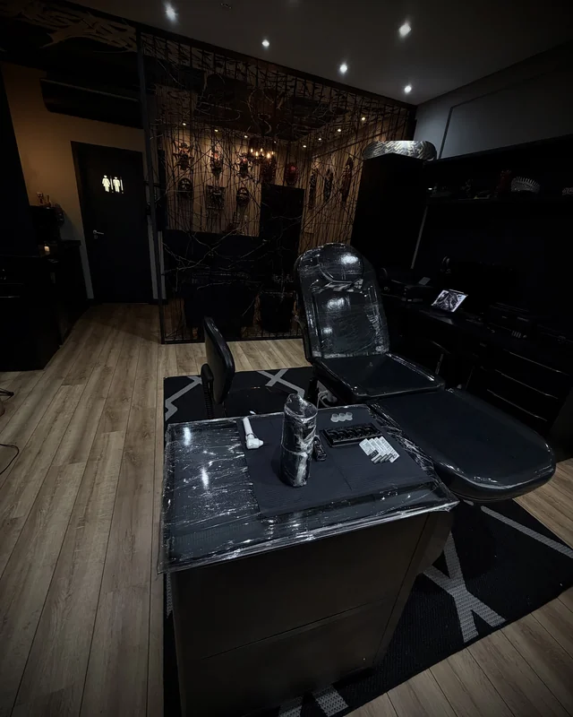
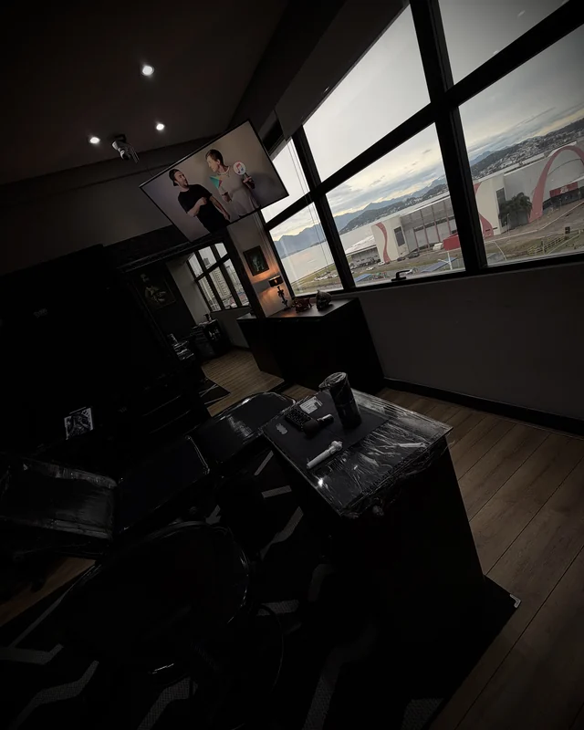
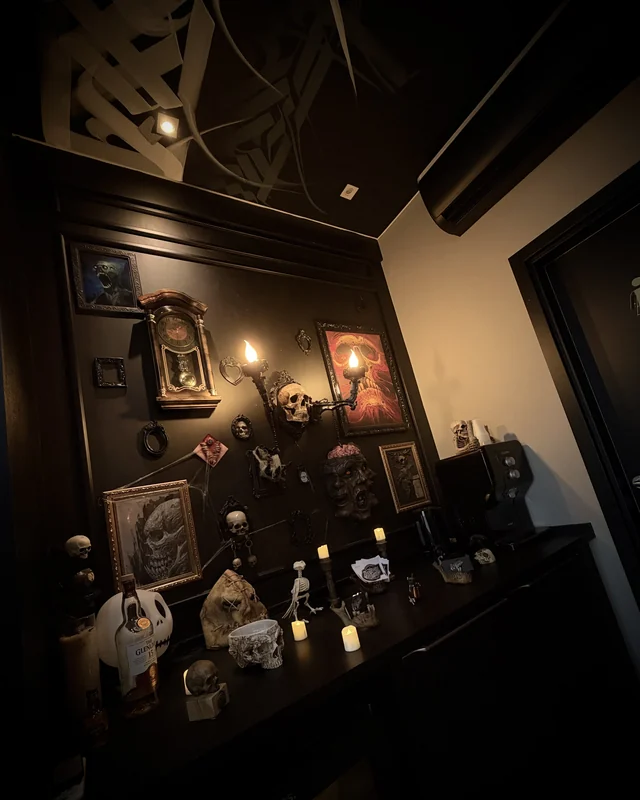
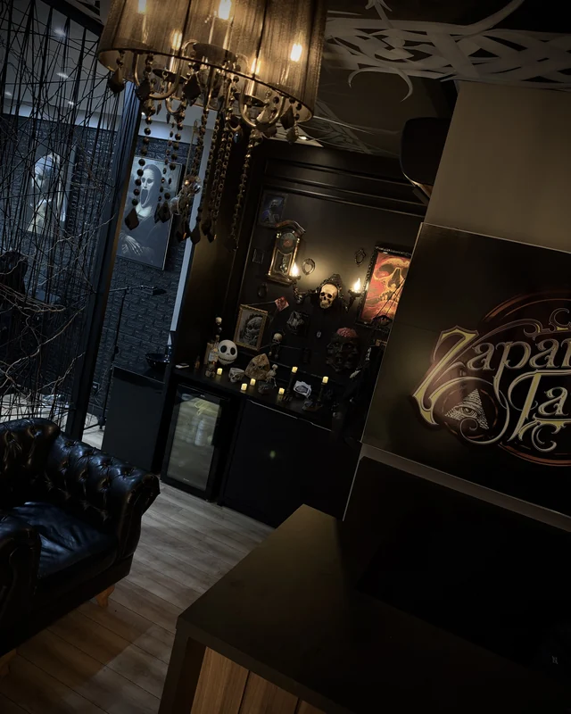
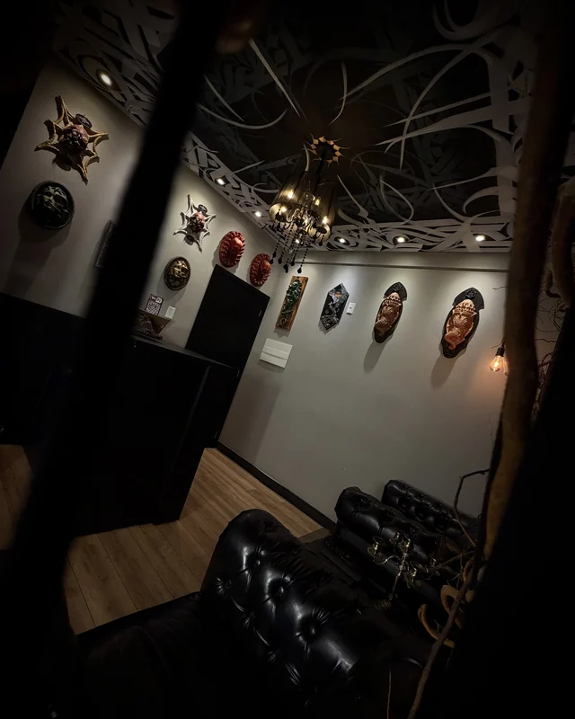
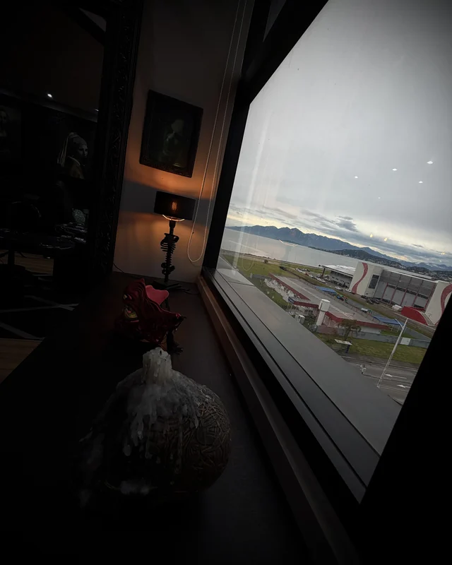
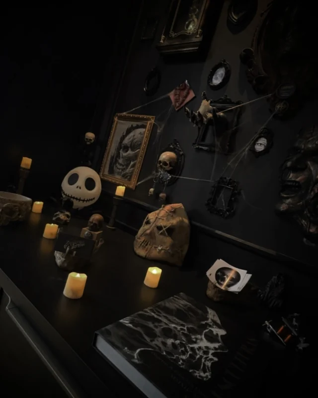
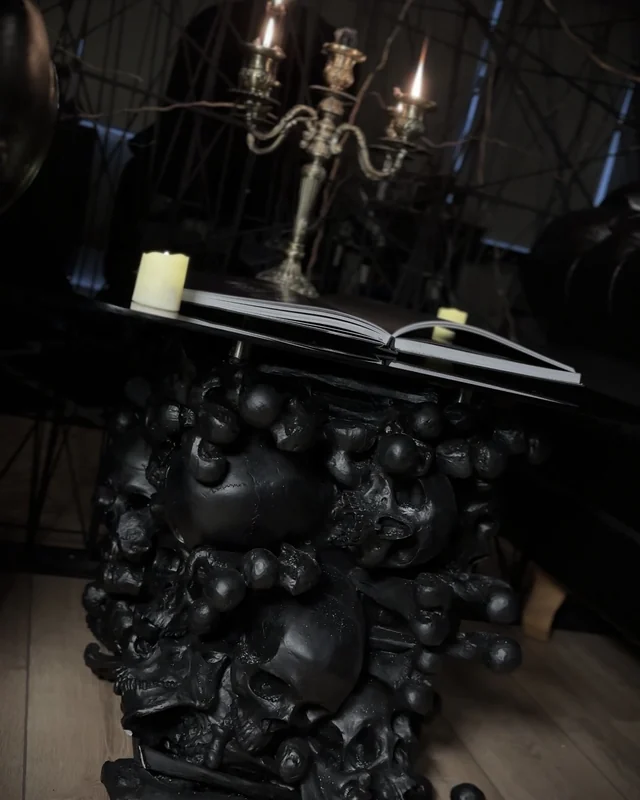
Contato
Tem uma ideia sombria na cabeça?
Mande a referência, a foto do local e o tamanho. O resto começa na conversa.
Chamar no WhatsApp